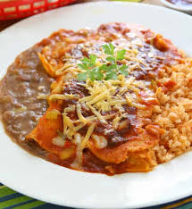

Enchilada

Description
Beef enchiladas are a delicious dish originally made popular in Mexico. Now a staple of Mexican restaurants across the world, most beef enchiladas feature ground beef in a rolled-up tortilla with enchilada sauce and lots of cheese.
Ingredients
- 1 lb ground beef
- 1 cup chunky salsa
- 1 (10-ounce) can red enchilada sauce
- 8 8-inch tortillas(preferrably flour)
- 1 8-ounce pagackage Borden Cheese Thick Cut Shredded Four Cheese Mexican
Instructions
- Preheat the oven to 350°F and lightly spray a 9×13-inch baking dish with nonstick cooking spray.
- In a large skillet, brown the ground beef over medium-high heat. Drain the excess fat away and return the meat to the skillet and to medium-low heat. Stir in the salsa and cook until heated through. Remove from the heat.
- Pour about 1/2 of the enchilada sauce in the bottom of the prepared baking dish.
- Pour about 1/2 of the enchilada sauce in the bottom of the prepared baking dish.
- Tightly wrap the dish with aluminum foil and bake for 30 to 35 minutes.
Home